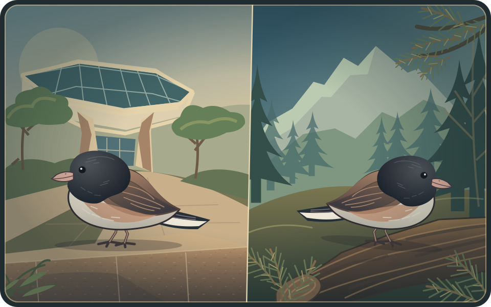

FIELD NOTEBOOK · B.4 / 04
Junco Investigation
Why do city juncos act bolder?
Follow two populations from the field to a shared aviary, then look for a clue in their stress response.
Real research25–35 minDataset —

Write a field observation to unlock the shared aviary.
01 · FIELD OBSERVATIONS
How close could people get?
Simulated fieldwork Walk toward a junco
Move the observer toward the bird, one step at a time. When the bird flies, record how far away the observer was. Start another trial to compare with a different bird or setting.
These are simulated birds, not the birds in the published graphs below. The model varies when each bird flies around the published group averages; the amount of variation is illustrative.
Distance: —
Choose a setting and start a trial.
Simulated trial log
Distances are recorded at the first step that made the model bird fly, not at the exact threshold between steps.
| Trial | Population | Context | Takeoff distance |
|---|
02 · CONTROLLED COMPARISON
What if both groups grow up in the same setting?
COMMON GARDEN · HOME AVIARIES
Different origins, matched conditions
01 UC San Diego02 Mt. Laguna
Try a sample care routine. Watch what stays the same in both enclosures.
- Approach both enclosures
- Refill both dishes
- Same routine for both groups
Matched housing: Birds from the two populations lived separately under the same housing conditions, including similar numbers of birds per unit of floor space.
Researchers captured young juncos after hatching and raised them under matched conditions. Later, they measured how quickly and widely each bird explored a test room it had never visited. The field walk-up measured a different behavior: when a bird flew away from a person.
Aviary limit: inherited or learned? Inherited traits are passed from parents. Behavior can also be learned or shaped by early conditions. These birds were collected after hatching, so matching their current housing cannot separate those explanations.
RESULTS RELEASED
Exploring a new room
Exploring a new room and flying from a person are different behaviors. Compare the patterns, not the numbers across the two graphs.
The bars show group averages from a real aviary experiment (Atwell et al. (2012), Fig. 3). The hormone graph uses the same exploration score for individual birds, so it shows a wider range.
Read the plotted values
03 · LOOK FOR A RELATIONSHIP
Does the stress response go with exploration?
View CORT graph and data
How to read this graph
Each dot shows the same bird’s results from two separate tests.
- Across: Maximum CORT
- CORT (corticosterone) is a stress hormone. Researchers used the higher of two blood levels, measured 15 and 30 minutes after capture, not the starting level. The unit is ng/mL (nanograms per milliliter).
- Up: Exploration score (PC1)
- This score combines how quickly the bird moved to new places, how many places it visited, and how often it moved in a separate 20-minute test. Higher scores mean quicker and more extensive exploration. The score has no units. Below zero means a lower score, not negative movements.
Try one dot: Find the far-right dot, at about 38.4 ng/mL and −0.8. Those are one bird’s maximum CORT and exploration score. The coordinates are estimated, and the graph doesn’t identify its population.
Look at the dots before turning on the best-fit line. A correlation is a pattern between two measurements, not proof that one causes the other. A difference between the groups could contribute to the overall pattern, even if it is weaker or absent within either group.
Both populations combined. Each dot’s population is unknown in this figure. Use the aviary bars, not these dots, to compare group averages. To explore CORT by site, use OpenSciEd’s Junco Data Excursion and split its graph by the Location column.
Evidence limit: This pooled plot does not establish the relationship within either population. The published analysis found a negative association after accounting for population, sex, and body mass. Neither analysis proves that CORT causes a change in exploration.
Read the plotted values
Rows number the dots in the table. The source does not identify each bird’s population.
| Bird (dot) | CORT | Exploration score | Population of origin |
|---|
Sources, methods, and limits
Atwell et al. (2012), Behavioral Ecology. Field distances measure tolerance of an approaching person; exploration scores measure a different kind of boldness. They are not the same measurement.
Identical aviaries make a difference caused only by the birds’ current setting less likely. The experiment did not rule out all effects from before capture. A relationship between CORT and exploration does not establish which, if either, causes the other.